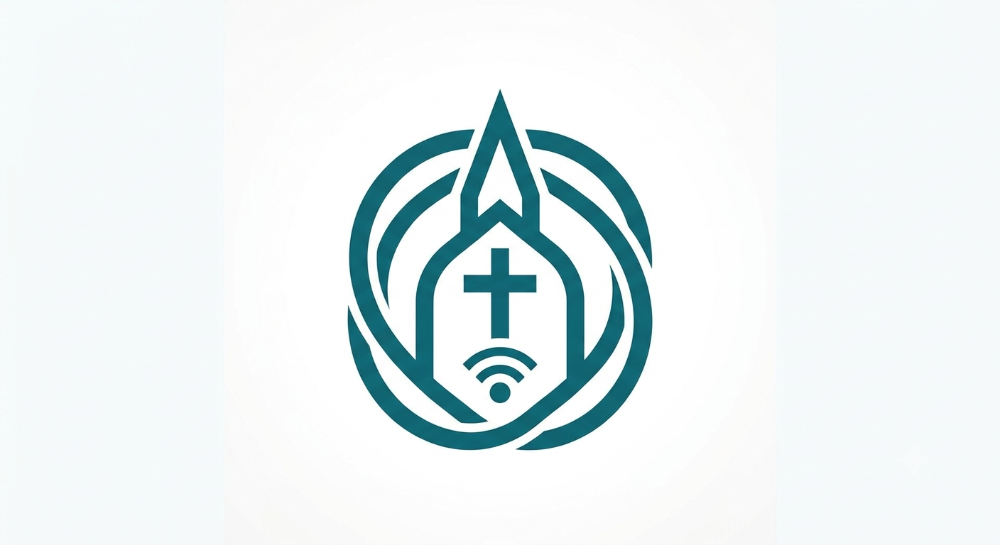

<div class="container">
  <p-menubar [model]="items" [style]="{'background-color' : 'var(--SECONDARY)'}">
    <ng-template pTemplate="start">
      
    </ng-template>
    <ng-template pTemplate="end">
      <p-button severity="danger" label="Logout" styleClass="w-full" (onClick)="onLogout()"></p-button>
    </ng-template>
  </p-menubar>
</div>